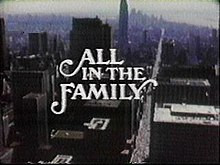
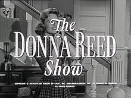
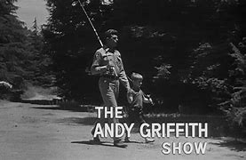

| Show |
Years |
Network |
Setting |
Picture |
Star |
Character |
Synopsis |
| Cheers |
1982-1993 |
NBC |
Boston |
 |
Ted Danson |
Sam Malone |
The show is set in the titular bar in Boston, where a group of locals meet to drink,
relax and socialize. At the center of the show is the bar's owner and head
bartender, Sam Malone, who is a womanizing former relief pitcher for the
Boston Red Sox. The show's ensemble cast introduced in the pilot episode
are waitresses Diane Chambers and Carla Tortelli, second bartender Coach
Ernie Pantusso, and regular customers Norm Peterson and Cliff Clavin. Later
main characters of the show include Frasier Crane, Woody Boyd, Lilith Sternin,
and Rebecca Howe. |
| M*A*S*H |
1972-1983 |
CBS |
Korean War |
 |
Alan Alda |
Dr. Benjamin "Hawkeye" Pierce |
The show was an ensemble piece revolving around key personnel in
a United States Army Mobile Army Surgical Hospital (MASH) in
the Korean War (1950–53). The "4077th MASH" was one of several
surgical units in Korea. Early seasons aired on network prime time while the Vietnam War
was still ongoing; the show was forced to walk the fine line of
commenting on that war while at the same time not seeming to protest
against it. The show's discourse, under the cover of comedy,
often questioned, mocked, and grappled with America's role in the Cold War. |
| Friends |
1994-2004 |
NBC |
New York City |
 |
Jennifer Aniston |
Rachel Green |
Episodes depict the friends' comedic and romantic adventures and career
issues, such as Joey auditioning for roles or Rachel seeking jobs in the
fashion industry. The six characters each have many dates and serious
relationships, such as Monica with Richard Burke (Tom Selleck) and Ross
with Emily Waltham (Helen Baxendale). Ross and Rachel's intermittent
relationship is the most often-recurring storyline; during the ten seasons
of the show, they repeatedly date and break up. |
| The Wonder Years |
1988-1993 |
ABC |
California |
|
Fred Savage |
Kevin Arnold |
The show's plot centers on Kevin Arnold, son of Jack and Norma Arnold. Kevin's
father holds a management job at NORCOM, a defense contractor, while his mother
is a housewife. Kevin also has an older brother, Wayne, and an older
sister, Karen. Two of Kevin's friends and neighbors are prominently featured
throughout the series: his best friend, Paul Pfeiffer, and his
crush-turned-girlfriend Gwendolyn "Winnie" Cooper. Storylines are told
through Kevin's reflections as an adult in his mid-30s, voiced by Daniel Ster |
| All in the Family |
1971-1979 |
CBS |
Queens |
 |
Carrol O'Conner |
Archie Bunker |
All in the Family is about a working-class White family living in Queens,
New York. Its patriarch is Archie Bunker (O'Connor), an outspoken, narrow-minded
man, seemingly prejudiced against everyone who is not like him or his idea of
how people should be. Archie's wife Edith (Jean Stapleton) is sweet and
understanding, though somewhat naïve and uneducated; her husband sometimes
disparagingly calls her "dingbat". Their one child, Gloria (Sally Struthers),
is generally kind and good-natured like her mother, but displays traces of her
father's stubbornness and temper; unlike them, she is a feminist. Gloria is
married to college, later graduate student, later college instructor Michael
Stivic (Reiner)–referred to as "Meathead" by Archie–whose values are likewise
influenced and shaped by the counterculture of the 1960s. |
| The Donna Reed Show |
1958-1966 |
ABC |
Suburbia |
 |
Donna Reed |
Donna Stone |
This show was the first TV family sitcom to feature the mother as the center
of the show. Reed's character, Donna Stone, is a loving mother and wife, but
also a strong woman, an active participant in her community, a woman with
feelings and a sense of humor. According to many of Reed's friends and family,
Reed shared many similarities to the character that she portrayed on screen,
implying that the fictional Donna Stone was a near-identical copy of Reed herself. |
| The Big Bang Theory |
2007-2019 |
CBS |
Pasadena |
|
Johnny Galecki |
Leonard Hofstadter |
The show originally centered on five characters living in Pasadena,
California: Leonard Hofstadter (Johnny Galecki) and Sheldon Cooper
(Jim Parsons), both physicists at Caltech, who share an apartment;
Penny (Kaley Cuoco), a waitress and aspiring actress who lives across
the hall; and Leonard and Sheldon's similarly geeky and socially awkward
friends and coworkers, aerospace engineer Howard Wolowitz (Simon Helberg)
and astrophysicist Raj Koothrappali (Kunal Nayyar). |
| The Andy Griffth Show |
1960-1968 |
CBS |
Mayberry, NC |
 |
Andy Taylor |
Andy Griffith |
TThe series revolves around Andy Taylor (Andy Griffith), the sheriff of the
sleepy, slow-paced fictional community of Mayberry, North Carolina. His
laid-back, level-headed approach to law enforcement makes him the scourge of
local moonshiners and out-of-town criminals, while his abilities to settle
community problems with common-sense advice, mediation, and conciliation
make him popular with his fellow citizens. His professional life, however, is
complicated by the repeated gaffes of his inept deputy, Barney Fife
(Don Knotts). Barney is Andy's cousin and best friend. At home, widower
Andy raises his young son Opie (Ronny Howard), assisted by his maiden aunt
and housekeeper, Aunt Bee (Frances Bavier). Opie tests his father's parenting
skills season after season, and Aunt Bee's ill-considered romances and
adventures cause her nephew concern. |